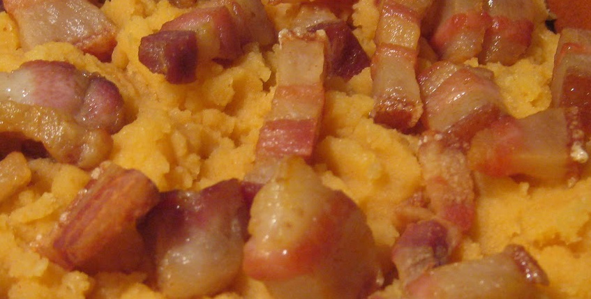
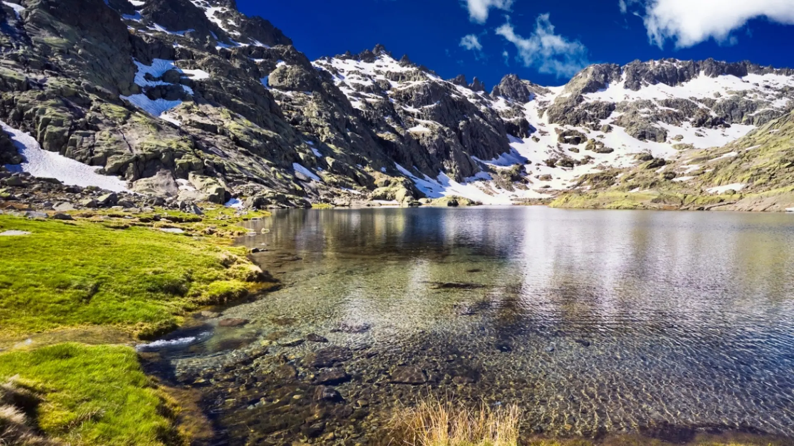
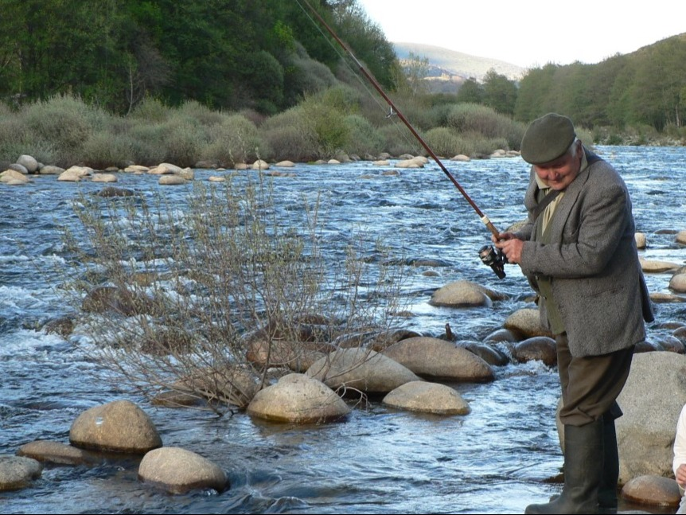
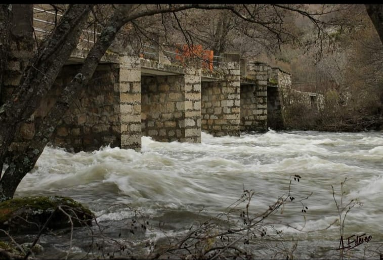
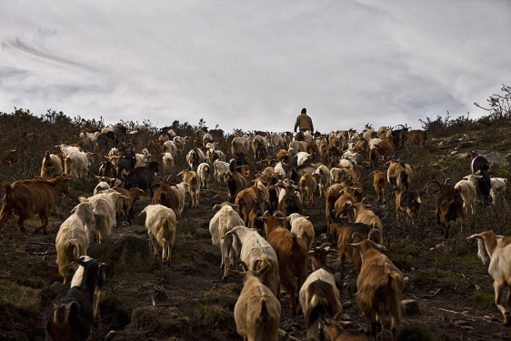
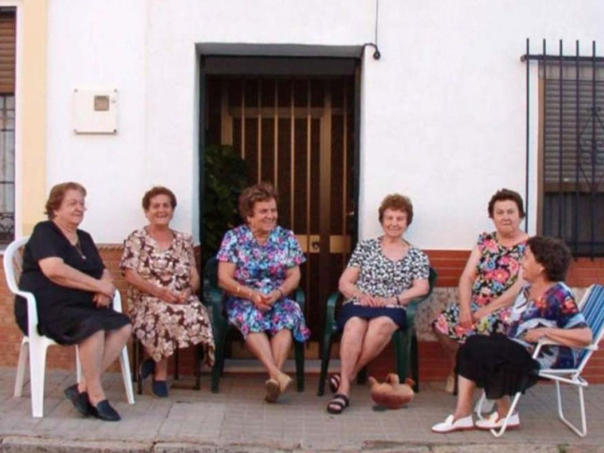

Experiencias Raíces Vivas
Siente la Sierra de Gredos a través de sus oficios y sabores.

TallerCocina de la Sierra
Elaboración de patatas machaconas y dulces tradicionales de Angostura.
 Taller
Taller
Cestos de Mimbre
Taller artesanal: crea tu propia cesta siguiendo técnicas centenarias.

RutaLaguna Grande de Gredos
Ruta de alta montaña hasta el corazón del Circo de Gredos.
 Ruta
Ruta
Subida a La Espesura
Sigue el camino trashumante donde antiguamente subía el ganado.
 Charla
Charla
Memoria de la Pobreza
Nuestros mayores cuentan cómo era sobrevivir en la sierra hace 70 años.
 Estancia
Estancia
Casas Rurales Angostura
Descansa en viviendas tradicionales rehabilitadas en el Tormes.

TallerCultivo y Pesca Tradicional
Aprende los secretos del huerto serrano y la pesca artesanal en el Tormes.

RutaSenda del Río Tormes
Paseo suave por las pozas y puentes que cruzan nuestra localidad.
 Ruta
Ruta
Secretos de Gredos
Interpretación de la flora y fauna local con guías expertos.

CharlaLa Vida del Pastor
Historias de soledad y naturaleza en los puertos de alta montaña.

CharlaLo que Gredos calla
Anécdotas curiosas y leyendas de Angostura que no aparecen en los libros.